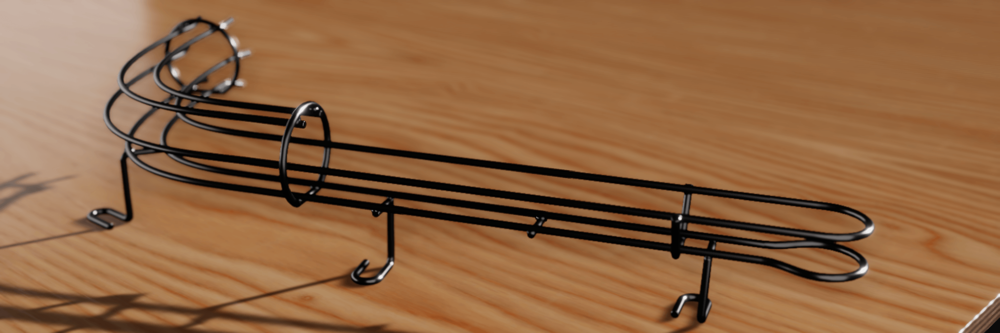
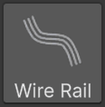

Wire Rails
Wire rails are the bent-steel ramps, habitrails and guides that carry the ball above the playfield. In VPE, a wire rail is one component. You draw a route with a Unity spline, describe how the wires sit around that route, add rings and supports where a real one would have them, and the component generates both the visible tubes and a collider the ball rolls in.
How to think about it
A wire rail is four ideas stacked on top of each other:
- The route is a spline (like a Curve in Blender). It's the centerline every wire follows, and its knots are the what you position by hand in the Scene view.
- Wire layouts describe the cross-section: which wires exist, and where each one sits to the left, right, above or below the centerline. A layout is placed at a distance along the route and holds until the next one. Between two layouts, the wires glide from one arrangement to the other.
- Fixtures are the metalwork that holds the wires together: rings, rungs, stands, and the fittings at either end of the rail.
- Generated geometry is what comes out: a render mesh of tubes, and a separate ball channel collider fitted to the space the ball actually occupies rather than to each wire.
The route and the cross-section are edited independently, and that's the point. Adding a knot never changes the wires, and adding a layout never changes the route.
Create a wire rail

Click Wire Rail in the toolbox, or choose GameObject -> Pinball -> Wire Rail. VPE creates a Wire Rail GameObject under the playfield with a straight 500 unit route and a four-wire habitrail layout: two bottom rails the ball rests on, and two raised rails that keep it from falling out.
That is already a working rail. It renders, and in play mode the ball rolls along it. Everything from here on is refinement:
- Shape the route in the Scene view and grade its height.
- Change the wire layout where the rail opens up, narrows, or gains and loses wires.
- Add fixtures so the rail looks built rather than floating.
- Tune the generated geometry, from tube resolution to how the collider treats the ends of the rail.
Units
Everything you type into the Wire Rail inspector is in VPX units, like the rest of the table. A standard ball is 50 units across, and the default wire is 6.5 units thick. See Units and 3D Space for how those map to Unity units.
What it doesn't do yet
- No import from or export to
.vpxfiles. Wire rails are authored in VPE only. - No branching. One component is one route. A junction is two components meeting.
- No switch events. A wire rail is only a collider. If the game needs to know the ball is on it, put a trigger there.